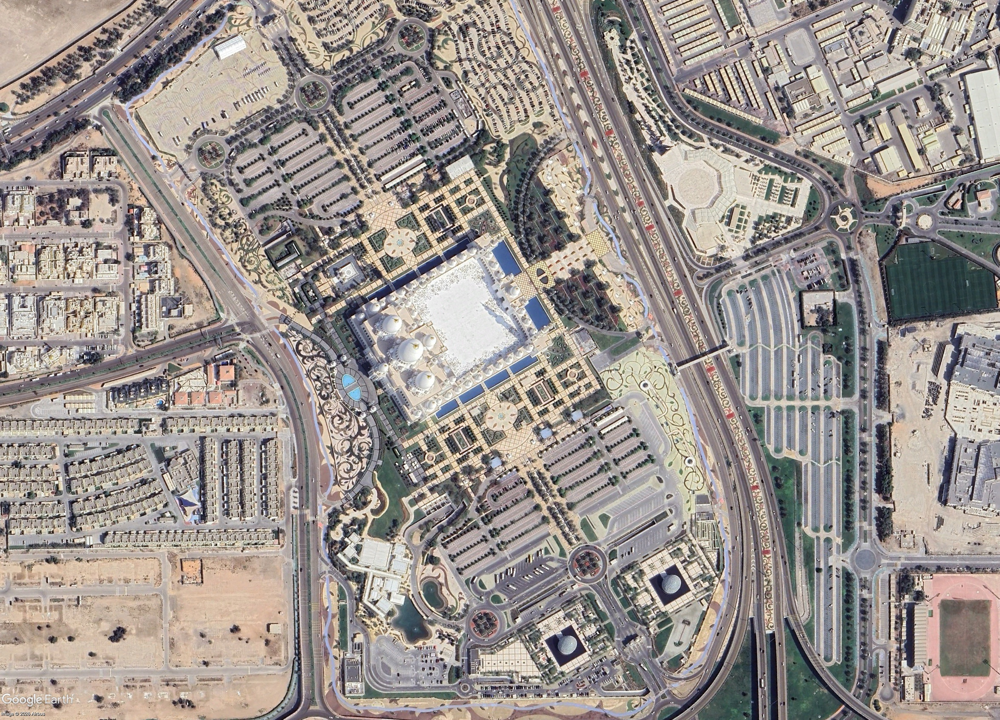
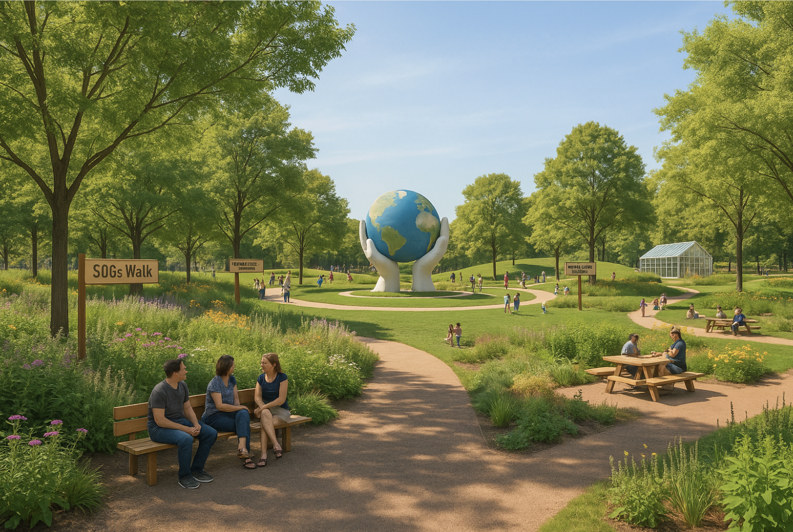
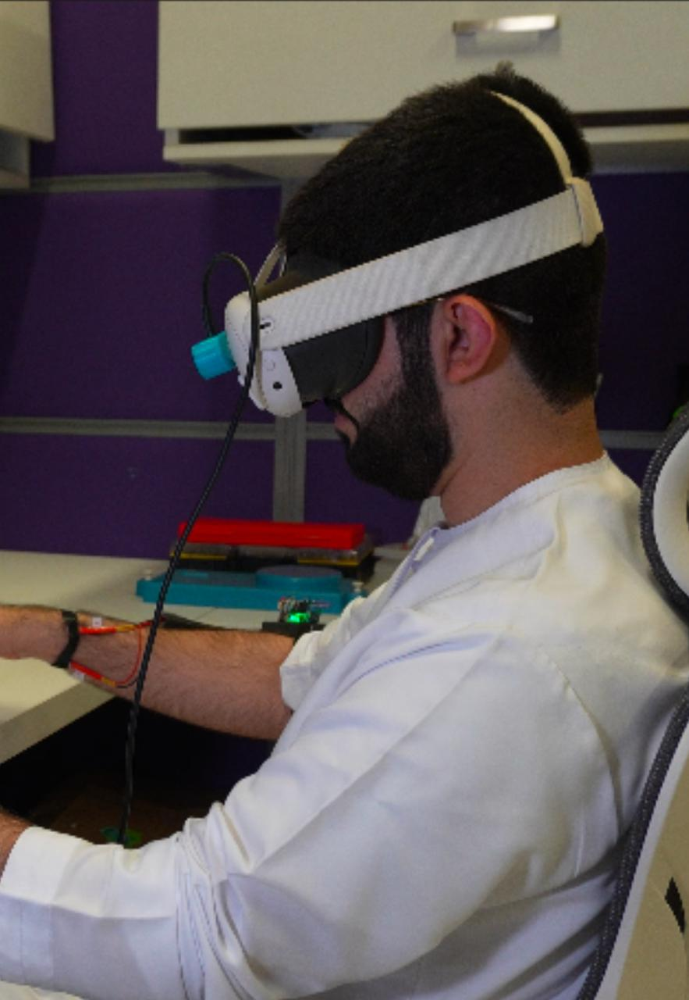

Research

Mosque Walkability Within Abu Dhabi
I am currently researching the topic of mosque walkability through an understanding of the perception of residents within suburban cities in Abu Dhabi. This research could compliment city design methods and how we design and inlude mosques in city planning.

Al Bahyah Revitalization Project
This project included the reimagination of non develped area next to Al Bahyah. The goal of this project was to create a new model for suburban city design. Creating a new benchmark of how cities in the gulf should be designed.

Freedom Plaza Reimagination Project
The Freedom Plaza within New York City is a severley underutilized area within the city. It is situated next to the United Nations headquarters and could be a place for amazing projects. This is why our team set out to reimagine the space into an park which plays into the current context of the space to create an inviting environement for the world.

Post-Stroke XR Simulation
The aim of this project was to create an innovative and adaptive method for rehabilitation of post stroke patients. Aimed at creating a more adaptive version of the traditional 9-hole peg test for patients. Utilizing both Oculus Vr headset alongisde and sonsory wristband.